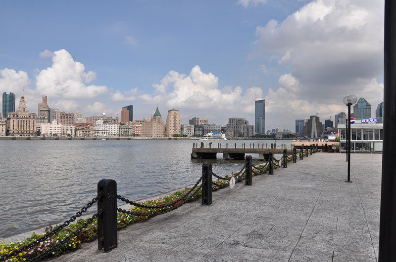

黄浦江边晨与夜
#1 黄浦江边晨与夜 作者：蓝色★眼泪 发表时间：2011-8-11 17:53:14
试验贴~
用美图批的效果~
未完 待续~
［此帖子已被 蓝色★眼泪 在 2011-8-11 17:54:36 编辑过］
［ 梧桐风 于 2011-8-11 19:02:36 时花20金币送鲜花一朵］
［ 梧桐风 于 2011-8-11 19:02:40 时花20金币送鲜花一朵］
［ 魔铃 于 2011-8-11 22:16:22 时花20金币送鲜花一朵］
#2 Re:黄浦江边晨与夜 作者：梧桐风 发表时间：2011-8-11 19:03:11
坐等LZ发图#3 Re:黄浦江边晨与夜 作者：蓝天蓝 发表时间：2011-8-11 19:14:45
做板凳等#4 Re:黄浦江边晨与夜 作者：蓝色★眼泪 发表时间：2011-8-11 21:35:28
晨 05:01［此帖子已被 蓝色★眼泪 在 2011-8-11 21:37:53 编辑过］
#5 Re:黄浦江边晨与夜 作者：有志青年 发表时间：2011-8-11 22:46:17
电脑画的吗？牛
#6 Re:黄浦江边晨与夜 作者：蓝色★眼泪 发表时间：2011-8-12 9:07:38
这张是拍的照片~用美图秀秀P成素描~
这样效果就出来了~会比原图更有可看性~
过3小时不能编辑帖子~~ 我回帖好像也发不了照片~~
求助~还有其他方法吗
#7 Re:Re:黄浦江边晨与夜 作者：梧桐风 发表时间：2011-8-12 9:46:21
引用：点文章上面的回复，就可以继续上传照片了
原文由 蓝色★眼泪 发表于 2011-8-12 9:07:38 :这张是拍的照片~用美图秀秀P成素描~
这样效果就出来了~会比原图更有可看性~
过3小时不能编辑帖子~~ 我回帖好像也发不了照片~~
求助~还有其他方法吗
#8 Re:黄浦江边晨与夜 作者：蓝色★眼泪 发表时间：2011-8-12 10:13:14
2010年的7月
7月 凌晨5点
7月 早上6-7点（原图没带 忘记具体时间了）
7月 早上7点30
7月 早上9点

2011年的3月
3月 18点30
3月 19点30
3月 19点30
3月 20点
从小待的地方
没有好，也没有坏
感觉
就是从黑白色调变成了彩色世界
黑白电视机的革命之旅 呵呵
这就是我的记忆
相册中的变色调
记得小时候的
江边充斥着臭哄哄的味道
黑脏脏的水色
改进后的现在
充满回忆的味道
熟悉的 甚至有点喜欢
即使它还是挥不去那一点点小小的臭味
只爱江边这段美丽的风情
［此帖子已被 蓝色★眼泪 在 2011-8-12 10:15:26 编辑过］
［此帖子已被 蓝色★眼泪 在 2011-8-12 10:21:42 编辑过］
［ 梧桐风 于 2011-8-12 10:22:28 时花20金币送鲜花一朵］
［ 掌棋如烟 于 2011-8-12 13:31:51 时花20金币送鲜花一朵］
［ 蓝天蓝 于 2011-8-12 19:13:10 时花20金币送鲜花一朵］
#9 Re:黄浦江边晨与夜 作者：蓝天蓝 发表时间：2011-8-12 11:55:08
欣赏了#10 Re:黄浦江边晨与夜 作者：魔铃 发表时间：2011-8-12 18:54:49
好美 有点动心想去玩了#11 Re:黄浦江边晨与夜 作者：棕榈 发表时间：2011-8-12 19:50:57
Nikon D90 ...........